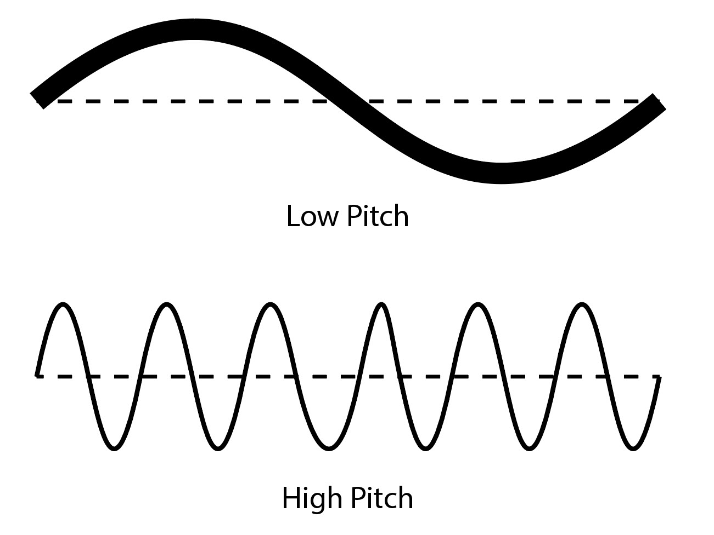
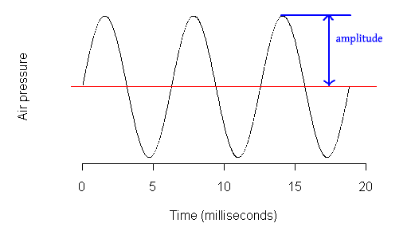
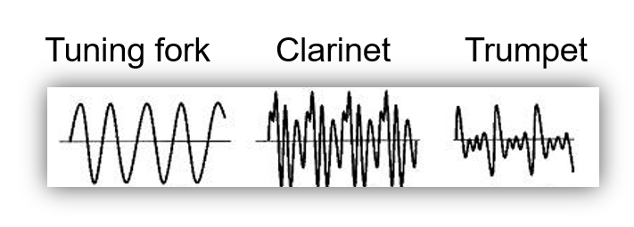

In all probability, music has played an important role in the
lifecycle of humans perhaps even before we could speak.
Significant evidence has been discovered that very early man
developed primitive flutes from animal bones and used stones and
wood as percussion. Voice would have been the first and most
natural means of expression in our distant ancestors, used to bond
socially or comfort a sleepless child. It is from these humble
beginnings that the music we enjoy today evolved. As we move
further through the history of music we find increasing evidence
of its key role in sacred and secular settings, although the
division into these categories was not define d in this way until
many years later.
Influences from the west to the east merged into the pre-Christian
music of the Greeks and later the Romans. Musical practices and
conventions perhaps conveyed by travelling musicians brought a
wealth of diversity and invention. Surviving Greek notation from
this period of musical history has given scientists and musicologists
alike a vital clue to the way that the music of the time might have
sounded. It certainly indicates remarkable links to the music that
would follow, perhaps most notably through the use of modality in
Greek music.
In the frescoes and in some written accounts, including the Bible,
we have learned about the instruments that featured in the Roman and
Greek times and their significance to the cultures. The trumpet as an
instrument of announcement and splendid ceremony, or the lyre as an
integral player in the songs of poets.
Across Europe from the early part of the first century, the monasteries
and abbeys became the places where music became embedded into the lives
of those devoted to God and their followers.
Christianity had established itself and with it came a new liturgy that
demanded a new music. Although early Christian music had its roots in
the practices and beliefs of the Hebrew people, what emerged from this
was to become the basis for sacred music for centuries to come. The
chants that were composed devoutly followed the sacred Latin texts in
a fashion that was tightly controlled and given only to the glory of
God. Music was very much subservient to the words, without flourish
or frivolity.
It was Pope Gregory (540-604 AD), who is credited with moving the
progress of sacred music forward and developing what is now called
Gregorian Chant, characterises by the haunting sound of the open,
perfect fifth.
Some controversy surrounds this claim, but the name has stuck and
the music remains distinct and vitally important as it moves away
from plainchant towards polyphony. This, in turn, looked back to
earlier times and customs, particularly in the music of the Jewish
people where the idea of a static drone commonly underpinned a second
vocal line.
Music is an arrangement of a mixture of sound waves. Basic properties of sound waves include frequency,velocity,wave length & amplitude. changing these properties even slightly changes the sound. So there are unimaginable number of variations that can be done to sound waves giving artists their freedom to create music that are unique and creative. There are 3 major characteristics of sound. They are Pitch,loudness and quality of sound.

Pitch is the highness or the lowness of sound. Pitch depends on the frequency of the sound wave. Frequency is the time taken for a complete oscillation of a sound wave and
frequency is directly propotional to the pitch

Loudness is the volume of the sound. it depends on the amplitude of the wave which is the heighest displacement of the wave. Loudness is directly propotional to the amplitude

Quality of sound is the characteristic that differenciates different sounds with the same pitch and loudness. simply it has a defines the shape of the wave form of the sound. Each sound of different musical instruments have different waveforms even if they have the same pitch and loudness